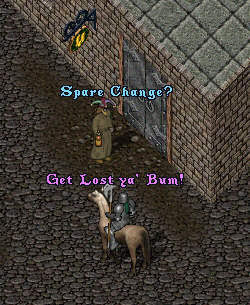
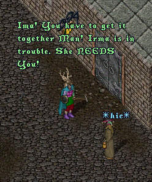
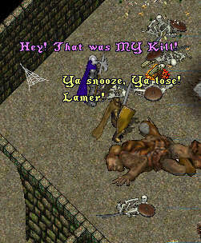
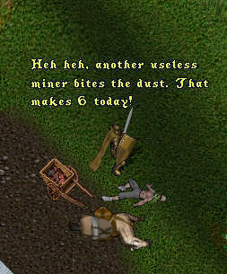
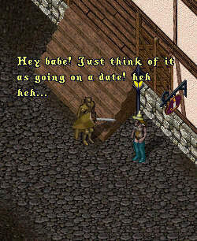
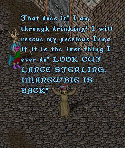

Episode 59: The Fall and Rise of Imanewbie (Part 1) When we last left ImaNewbie he was passed out drunk in front of a tavern. Spurned by his true love, IrmaDufus, ImaNewbie has apparently given up. As this episode opens we find ImaNewbie begging for change in front of the Brit Bank.

Then out of nowhere ImaNewbie's best
friend and Irma's brother, ImaDufus
arrives with shocking news.

It seems that Lance Sterling, Irma's new
boyfriend, has been gaining all that fame and
gold in the most nefarious of ways, such as:
Hiding in dungeons then running out
to get the last hit, stealing the
fame and looting the monster.

PK'ing helpless miners and killing their pack
animals up near Minoc, looting them for
their hard earned ore and ingots.

And the most dastardly way of all!
Forcing poor Irma to sell herself
on the streets of Britain!

This last image of his true love being dragged to the
depths of depravity by that scoundrel, Lance Sterling,
snaps ImaNewbie from his drunken stupor.
